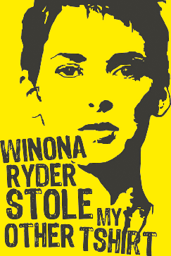

Miss Stickyfingers
On 12th  December 2001, Winona Ryder was arrested for shoplifting thousands of dollars’ worth of designer clothes and accessories at Saks Fifth Avenue department store in Beverly Hills, California. Ryder hired a top defence attorney. Negotiations for a plea-bargain failed at the end of summer 2002. During the trial, she was also accused of using drugs without valid prescriptions. Ryder was convicted of grand theft and vandalism, but the jury acquitted her on the third charge of burglary. In December 2002, she was sentenced to three years’ probation, 480 hours of community service, $3,700 in fines, and $6,355 in repayment to Saks. The judge ordered the actress to attend psychological and drug counselling.
“Heeeere’s Johnny!”
In 1994, Jack Nicholson was involved in a road rage incident. He used a golf club (apparently a number 2 iron) to smash the roof and windshield of another car. The other driver took Nicholson to court. The driver said that he was “severely injured” from “emotional distress”. The authorities said the film star became angry after being cut off in traffic. Charges were dropped after Nicholson reached an out-of-court settlement with the driver.
Caught with his pants down
On 27th June 1995, Hugh Grant was arrested by the Los Angeles Police “on suspicion of lewd conduct in a public place”. He had been caught in his car on Sunset Strip with prostitute Divine Brown (also known as Stella Marie Thompson), who had been paid $50 by Grant. Grant’s police mug-shot was in every paper across in the world. His explanation was that he was exhausted by all the interviews for the film Nine Months (he had done 12 interviews that day), and he didn’t know what he was doing (well, if he didn’t, Divine Brown certainly did). Naturally his excuse wasn’t taken seriously by the court. He received a heavy fine and two years probation.
Sometimes you have to put your foot down!
In February 2000, actress Halle Berry was involved in a car accident when she hit another vehicle after running through a red light. So, what do you do after a car accident? You run away of course. Berry put her foot down and drove away before the police arrived. Berry, who had sustained a head injury, later said she had no memory of the accident. She pleaded guilty to a misdemeanour charge. She paid a fine, made repayments to the other driver, did community service, and was placed on three years’ probation.
A bad telephone connection
In June 2005, Russell Crowe was arrested and charged with assault by New York City police. The incident took place at the Mercer Hotel, New York. Apparently, Crowe’s telephone in his hotel room wasn’t working, and the hotel concierge refused to help him make a call. So, Crowe threw a telephone at him. The concierge needed to be treated for a cut to his face. Crowe was charged with “fourth-degree criminal possession of a weapon” (the telephone). He was sentenced to probation and paid about US$100,000 to settle the civil lawsuit to the concierge. He blamed his state of mind on “the combination of jet lag, loneliness and adrenalin” and said he “wasn’t aiming” at the concierge. ✪